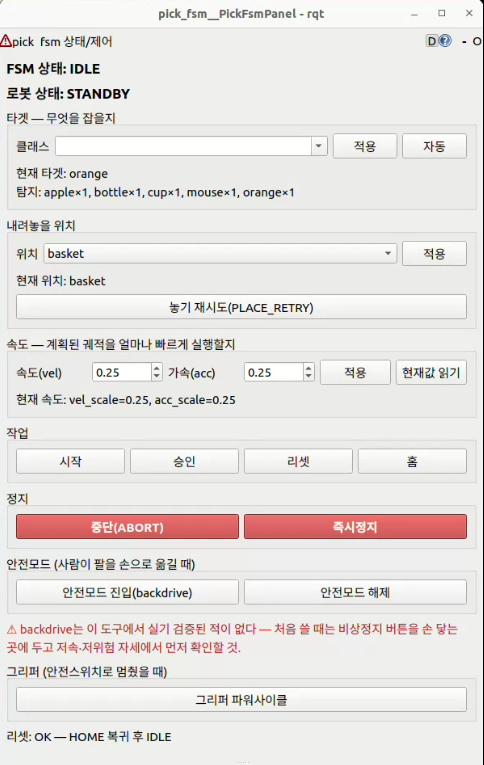

해결하려던 문제와 제약
"사과 바구니에 담아줘" 같은 자연어 지시를 LLM이 해석하고, 협동로봇이 물체의 위치와 형상을 인식해 장애물을 우회하여 집어 옮깁니다. 제약은 세 가지였습니다.
- GPU 한 대(8GB): 장애물 지도(nvblox)·GPU 경로계획(cuMotion)·물체 분할(YOLO-seg)·파지 후보 생성(GraspGenX)이 노트북 GPU 하나를 나눠 씀.
- 모델과 다른 실물 그리퍼: 제공된 RG2는 브라켓 22mm가 끼어 손끝이 모델과 38mm 어긋나고, 힌지 구조라 벌릴수록 손끝이 짧아짐.
- 두 개의 제어 주체: 따로 개발된 VLA 시스템이 자체 로봇 제어를 가져, 합치면 VLA와 pick FSM이 동시에 팔에 명령할 수 있는 구조.
본인 담당과 팀 분담
본인 담당: 판단 계층(VLA)·안전 계층(FSM) 통합, GraspGenX↔실물 RG2 정합(실측·보정·규약), GPU 메모리 대응(파지 후보 수 조정·YOLO 노드 누적 정리), 구동 중 정지 후 재계획 연결, 인지 실패 감지 게이트(팀 모션 코드 위에 제안·구현).
VLA와 FSM은 팀원과 분업으로 개발했고, 인지 실패 감지 게이트는 팀 모션 코드 위에 제안·구현했습니다.
핵심 해결 과정
① GPU 메모리 부족
- 상주분만 cuMotion 1.5GB + robot_segmenter 0.7GB + nvblox 0.3GB. GraspGenX 파지 후보 수를 기본 200 → 64로 줄여 출발.
- 재실행마다 YOLO 노드가 컨테이너에 쌓여(10개, VRAM 2.6GB·swap 소진) 마스크가 뒤섞임 → 실행 래퍼 + 중복 실행 방지 락으로 10개 → 1개 정리(래퍼 상태에서 Ctrl-C 종료 전달은 미검증).
- YOLO는 상주 120MB·추론 6.7ms로 병목이 아님을 실측, 진짜 병목은 GraspGenX였음을 검증.
② GraspGenX를 실물 RG2에 맞추기
- GraspGenX 모델은 그대로 두고 URDF·그리퍼 코드에서 흡수: 실측 오프셋 반영, 개구폭별 손끝 길이 보정표(충돌 모델 배치·RViz 표시용 추정이며 IK 목표 자체는 바꾸지 않음).
- grasp 자세를
tool0기준으로 잘못 해석해 그리퍼가 90° 눕는 문제 → 두 URDF를 회전행렬로 비교해 기준을rg2_base_link로 확정. - 닫힘 폭 부호 오류, 드라이버 폭 단위(1/10mm), 기본 파지력 40N이 사과를 으깨는 문제를 규약으로 정리.
③ VLA 노드와 기존 FSM 통합
- 팀과 협의해 VLA의 로봇 제어부(약 3,800줄)를 걷어 내고, VLA는 "어떤 물체를 어디로"만 넘기며 좌표·파지 계산과 이동은 FSM이 전담.
- 카메라를 2대 → 1대 공유로 정리. 잃은 손목 카메라 재파지 기능은 빈 서비스 인터페이스(
AcquireTarget.srv)로 복원 지점만 남김.

pick FSM 상태·제어 패널 (rqt)
결과와 검증 한계
- YOLO 노드 누적 10 → 1 실사용 확인.
- VLA가 지정한 물체를 실카메라 6~9개 물체 장면에서 GraspGenX 파지 후보까지 연결 확인.
- OMPL 경로의 구동 중 정지→재계획, 출발 전 장애물 우회를 실기 확인.
- 남은 과제: GPU 전 모듈 동시 구동 여유, RG2 보정의 파지 성공률 효과, cuMotion 실행 중 회피, 전체 pick-to-place 실물 검증.
회고 — "동작 성공"과 "안전한 동작"은 다른 층에서 따로 검증해야 한다.